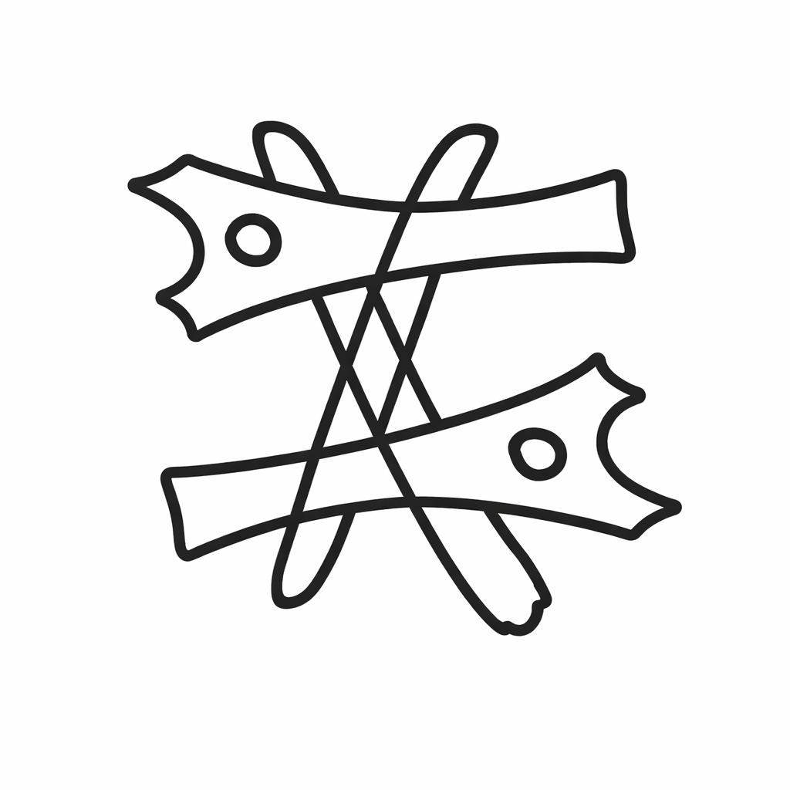

Unser Produkt ist eine Kombination aus einem der weltbekanntesten Spielen der Menschheitsgeschichte und der höchstwahrscheinlich, schrecklichsten Tat die eine Person, eine Gruppierung oder auch eine Nation getätigt wurde - Der Krieg.
Bezüglich der Markenidentität unseres Produktes und des Unternehmens haben wir uns für 3 bestimmte Marken entschieden
Die Wortmarke STRATIRA repräsentiert strategische Planung in einer abstrakten Form. Sie beschreibt nicht das Produkt selbst, sondern die Weise, mit der das Produkt genutzt wird.
Die Bildmarke übersetzt strategisches Denken in eine visuelle, geometrische Struktur. Sie steht für Ordnung, Balance und bewusste Entscheidungen. Die Bildmarke ist das Logo sowie das Herzstück unseres Unternehmens und ist auf der Hauptseite im Navigationblock wieder aufzufinden.
Die Positionsmarke in Form eines abstrakten Halbkreises auf der Unterseite jeder Figur angebracht. Die Form representiert die Nacht und die Leere die auf die Unendlichkeit der Strategien basiert.
STRATIRA versteht Schach nicht als Kriegssimulation, sondern als Denkraum, in dem Züge und Strategien Bedeutung durch Planung, Weitsicht und Interpretation erhalten.
Physisches Produkt:
Digitales Produkt:
| Bilder | Urheber | Erstellung | Rechte / Lizenz | Anmerkungen |
|---|---|---|---|---|
| Startseite: Logo | Tado GmbH | Eigenständige Gestaltung | Alle Rechte vorbehalten | / |
| Startseite: Banner | Tado GmbH | Eigenständige Gestaltung | Alle Rechte vorbehalten | KI wurde ausschließlich als unterstützendes Werkzeug verwendet |
| Startseite: Standard Edition | Tado GmbH | Eigenständige Gestaltung | Alle Rechte vorbehalten | KI wurde ausschließlich als unterstützendes Werkzeug verwendet |
| Startseite: Deluxe Edition | Tado GmbH | Eigenständige Gestaltung | Alle Rechte vorbehalten | KI wurde ausschließlich als unterstützendes Werkzeug verwendet |
| Startseite: Limited Edition | Tado GmbH | Eigenständige Gestaltung | Alle Rechte vorbehalten | KI wurde ausschließlich als unterstützendes Werkzeug verwendet |
| Texte | Urheber | Erstellung | Rechte / Lizenz | Anmerkungen |
|---|---|---|---|---|
| Startseite: Produktbeschreibung Standard Edition | Tado GmbH | Durch Künstliche Inteliligenz erschaffen | Alle Rechte vorbehalten | Aus Produkt Idee eine Produktbeschreibung generieren lassen |
| Startseite: Produktbeschreibung Deluxe Edition | Tado GmbH | Durch Künstliche Inteliligenz erschaffen | Alle Rechte vorbehalten | Aus Produkt Idee eine Produktbeschreibung generieren lassen |
| Startseite: Produktbeschreibung Limited Edition | Tado GmbH | Durch Künstliche Inteliligenz erschaffen | Alle Rechte vorbehalten | Aus Produkt Idee eine Produktbeschreibung generieren lassen |